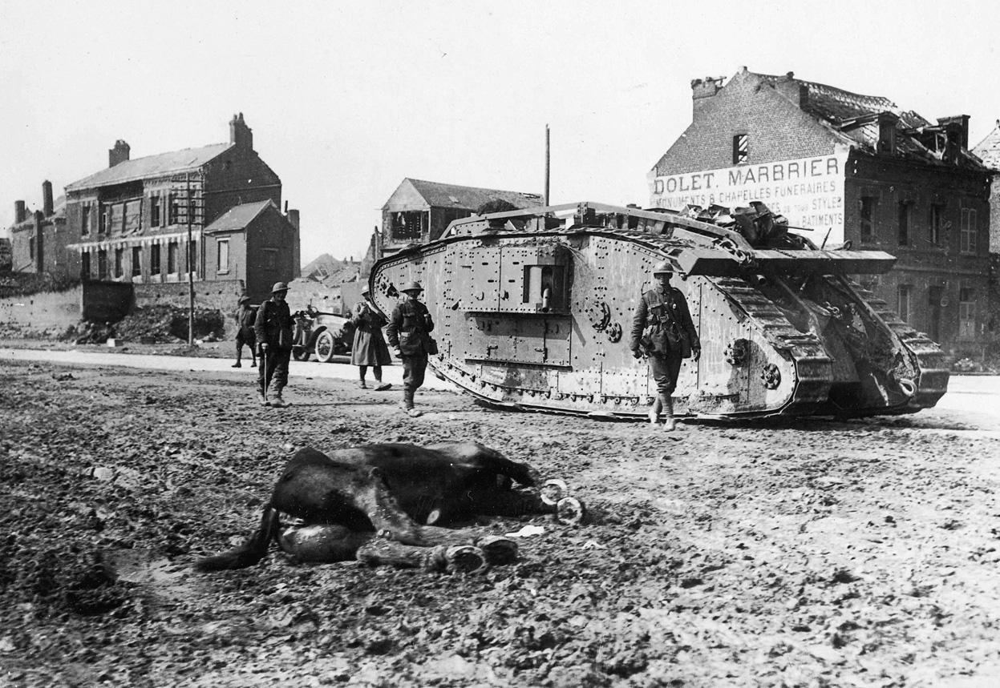
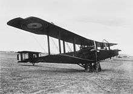
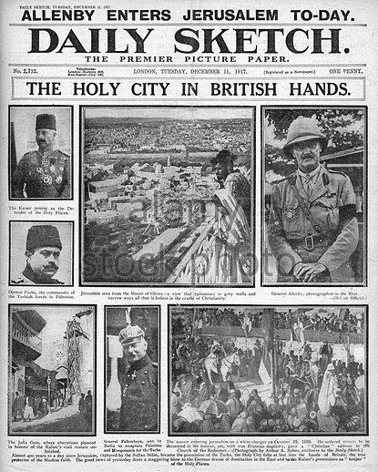
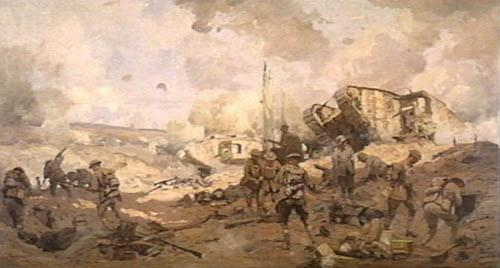

|
Hôpital Auxilaire D’Armée 30 – Abbaye de Royaumont (1918), by Norah Neilson-Gray
Wars don’t change just because we flip a page over on the calendar. The transition from August to September on the Western Front didn’t mean much to the average Doughboy, Tommy, Poliu or Kraut. The fighting went on with little to show for it except the ever-lengthening casualty lists and the larger numbers of wounded in the hospitals. The soldiers died. The staff officers planned. The generals commanded. And the politicians schemed.
Still, one thing did not die --- the hope, on all sides, that this would indeed be “the war to end all wars”. Yes, in spite of everything that had happened in the last four years some people still hoped. This month is theirs.
“We Are Making a New World” (Imperial War Museum)
The War to End All Wars: World War I was unprecedented when it happened. War on a global scale with that many casualties and advances in military technology was something no one had ever seen. After all the destruction the hope was that it would be the last war.
32 nations “so furiously waged together” for a period of time that even historians cannot agree on but ranged from four years, three months and one week (time of fighting) from 1 August, 1914 to 11 November, 1918 (or 1564 days ((or 1568 days if you include the start of the Austro-Serbian War)) ). If you count all the fighting in Turkey as part of WWI, then eight years, two months (or 3002 days).
World War One was one of the deadliest conflicts in the history of the human race, in which over sixteen million people died. The total number of both civilian and military casualties was around thirty-seven million (about equal to the entire population of California in 2018). The war killed almost seven million civilians and ten million military personnel.
In terms of treasure the numbers were unbelievably high --- until later wars came along. In total costs the United States spent $22.625 billions, Great Britain $35.334 billions (plus another $1,408 billions from the Empire), France $24.265 billions, Russia $22.293 billions, and Italy $12, 413 billions. On the other side, Germany spent $37,775 billions, Austria-Hungary $20.622 billions, Turkey $1,430 billions and Bulgaria $815 millions.
To put all that in perspective keep in mind that Mother Nature, in a single season, at no cost to herself, managed to kill well over fifty million people.
Fall will arrive in September, bringing with it lower temperatures and lower humidity. For September: the average daily temperature is: 16C, 61F; with average daily highs and lows of: 21C and 13C; and 61F and 55F; average rainfall for the month is 16 mm over 11 days; number of hours of sunshine is 8.
Please note that as the pace and scope of the fighting, especially on the Western Front, increases, the format for the daily news dispatches has changed to include a bit more information in a hopefully more readable format.
1
71 DAYS TO GO SUNDAY 1 SEPTEMBER 1918 12C/54F 1MM

British tank passes dead German horse at Battle of Peronne
Keep in mind that by the beginning of WWI cavalry was a thing of the past on the Western Front, although it still played a role on the Eastern Front and an important role in the Middle East. Still, over a hundred thousand horses were used on the Western Front for transportation and food, but by the end of the War most transport needs were being handled by railroad, motorized transport or, at the front, foot.
Western Front
Battle of Mont Saint-Quentin – The Australian 2nd Division captured most of the commune Péronne, France.
Second Battle of Bapaume – The New Zealand Division, with support by the British, captured Bancourt Ridge from the Germans to secure the town of Bapaume, France.
The U.S. Army 28th Infantry Division defeated German forces after nearly a month of brutal street fighting that destroyed most of the commune of Fismes, France.
Eastern Front
Battle of Baku – British General Lionel Dunsterville, commander of the Allied force in Baku, Azerbaijan, called Dunsterforce, met with leaders of the Centrocaspian Dictatorship and warned if the situation to hold the city from the Islamic Army of the Caucasus did not improve in the next few days, his force would withdraw. He was convinced to stay on until a White Russian reinforcement of 600 troops arrived.
2
70 DAYS TO GO MONDAY 2 SEPTEMBER 1918 13C/55F 0MM
Canadians in action at Queant.
Western Front
Battle on 23-mile front; Troops of First Army, supported by tanks, break through Drocourt-Queant "Switch" line, south of Scarpe, capture Cagnicourt and Villers, encircle and take Queant by nightfall; 10,000 prisoners.
On Lys front British also gain ground, and north of Peronne, where Sailly-Sallisel and whole of St. Pierre-Vaast Wood re-taken.
General Mangin continues advance north of Soissons, captures Neuilly and Terny Sorny.
Eastern Front
Italian contingent lands at Murmansk to join A.E.F.
3
69 DAYS TO GO TUESDAY 3 SEPTEMBER 1918 15C/59F 0MM
Second Battle of the Somme: Allies vs. Germans, Guns vs. tanks.
Second Battle of the Somme
Second Battle of the Somme, tanks vs. horses. Most soldiers loved their horses. Only Col. Patton loved his tanks.
Western Front
Third Battle of the Somme and Fourth Battle of Arras end. End of battle of the Scarpe.
British advance rapidly beyond Drocourt-Queant line towards Canal du Nord, capture Lecluse, Rumancourt and Baralle.
Germans evacuate Lens, retreat rapidly between Queant and Peronne.
Lens occupied by British forces. Lys front Allies capture Richebourg-St. Vaast.South of Peronne French cross Somme at Epenancourt.
East of Noyon French reach outskirts of Salency.
Eastern Front
USA Government recognizes the Czecho-Slovaks as possessing a de facto Government.
4
68 DAYS TO GO WEDNESDAY 4 SEPTEMBER 1918 17C/63F 1MM
Russian Bolshevik soldiers under guard by U.S. Army troops.
Western Front
Germans retreat on wider front; Canal du Nord forced by British and villages of Manancourt and Etricourt carried.
Ruyaulcourt also taken and outskirts of Havrincourt Wood reached.
British reach Moeuvres.
Lys front Ploegsteert and Hill 63 carried.
Prisoners since 2nd number 15,000.
Germans retreat before French in Noyon pocket, between Canal du Nord and Oise. French line now passes through Guiscard and Apilly.
Russian and Asiatic Theatres
Obozerskaya (North Russia) occupied by Allied forces.
United States contingent lands at Murmansk to join A.E.F.
Hsu Shih-Chang elected President of China.
5
67 DAYS TO GO THURSDAY 5 SEPTEMBER 1918 21C/71F 8MM
Khabarovsk (Eastern Siberia) taken by Japanese forces
Western Front
British still advance north and south of Peronne; approach high ground on Athies-Nurlu front; local fighting about Moeuvres and Neuville-Bourjonval.
Steady advance of General Humbert's Army from Noyon towards St. Quentin; crosses Somme canal and approaches within three miles of Ham.
Vesle front (east of Soissons) Franco-American troops drive Germans north towards the Aisne.
Eastern Front
North of Vladivostok Japanese capture Khabarovsk, an important enemy base, with much booty and 120 enemy guns.
Asiatic and Egyptian Theatres
The Hejez Arabs continue to harry the Turks in frequent raids around Medina.
6
66 DAYS TO GO FRIDAY 6 SEPTEMBER 1918 20C/67F 0MM
"A Bombing Post in the Snow" by John Nash, IWM
Western Front
Amiens-St. Quentin road British press forward.
Germans in full retreat from the Somme.
Ham and Chauny retaken by French.
In north English troops advance north-west of Armentieres and retake Bailleul.
Americans reach south bank of Aisne river.
Naval and Overseas Operations
In East Africa von Lettow's forces are overtaken on Upper Lurio river near Anguros and attacked by two British columns from south and south-east. Enemy retreat west after severe losses in killed and captured.
7
65 DAYS TO GO SATURDAY 7 SEPTEMBER 1918 20C/68F 0MM
A picture of Fanya Kaplan's attempt to kill Lenin, painted by P. P. Baloyusov
On Aug. 17, Moisei Uritsky, the head of the Cheka in Petrograd, was assassinated by Leonid Kannegisser, an Imperial Russian Army cadet, in retaliation for executions carried out by the Cheka on fellow officers. On Aug. 30 Vladimir Lenin was shot and critically wounded by Fanya Kaplan in Moscow, with his life in the balance for days after.
The Cheka then launched a crackdown on dissidents in what became known as the Red Terror, based on Lenin's long-time advocacy for mass terror as a means to accomplish rapid societal transformation as seen in the French Revolution. At first they targeted the Socialist Revolutionaries, their former allies, to which Ms. Kaplan had belonged, but this was soon expanded to include the "bourgeois" and all anti-Bolshevik opposition, including strikers and farmers (who were accused of monarchist sympathies).
At the same time the White Armies (Denikin's Kossacks in the south, Kolchak's Siberians in the east) executed their White Terror campaigns in the territories under their control, which were equally merciless and mainly aimed at the Bolsheviks and the Jews, which they treated as one and the same (both Trotsky and Uritsky were Jews, just as Uritsky's murderer Kannegisser, proof that there were Jews on both sides). The local populations in the ebb and flow of the three year long Civil War were literally between hammer and anvil.
Western Front
Rapid British and French pursuit of Germans, who retreat towards "Hindenburg Line".
British take Roisel (railway junction for St. Quentin and Cambrai) and greater part of Havrincourt Wood.
Somme French capture Pithon, Dury and Ollezy, east of Ham, cross Crozat canal at Pont de Tugny and St. Simon after heavy fighting.
Lys front enemy display strong resistance.
Eastern Front
First instalment of Russian War Indemnity to Germany is sent from Moscow to the frontier.
Naval and Overseas Operations
Publication by Admiralty of names of commanders of 151 U-boats disposed of by Navy.
8
64 DAYS TO GO SUNDAY 8 SEPTEMBER 1918 16C/61F 7MM
Trucks replace horses for moving supplies, but horses continue to be favored for moving guns.
Western Front
Enemy show increased resistance.
Violent fighting north and east of St. Simon.
Avesnes lost and re-taken by French, who also take Artemps, Happencourt, Fluquieres, Vaux and gain ground both sides of Oise river.
Over 19,000 prisoners taken by British in past week. Over 150,000 taken by Allies since 18 July.
Eastern Front
Representatives of neutral countries make strong protest against the wholesale arrests and executions carried out in Russia.
Junction of the Czecho-Slovaks at Olovyanna in Siberia with other Czech forces from the east.
Ufa Conference: Formation of the Provisional All-Russian Government with the support of the Czechoslovakian Legion.
9
63 DAYS TO GO MONDAY 9 SEPTEMBER 1918 16C/60F 5MM
"La Mitrailleuse" (1915) by Christopher Richard Wynne Nevinson
Lt.-Gen. Sir GMW Macdonogh appointed Adj.-Gen., Home Forces, Great Britain
Lieutenant-General Sir George Mark Watson Macdonogh GBE KCB KCMG (4 March 1865 – 10 July 1942) was a British Army general officer. After early service in the Royal Engineers he became a staff officer prior to the outbreak of the First World War. His main role in the war was as Director of Military Intelligence at the War Office in 1916-18.
He succeeded Edmonds as head of MO5, drafting measures to control aliens in the event of war. Henry Wilson, Director of Military Operations, distrusted him as a convert from Methodism to Roman Catholicism. In March 1914 Macdonogh was one of the few officers in the War Office willing to coerce Protestant Ulster during the Curragh Incident.
Western Front
After sharp fighting British gain high ground between Havrincourt and Gouzeaucourt, overlooking Hindenburg Line.
French push well across Crozat Canal towards St. Quentin and La Fere; main progress made east of St. Simon; they capture Grand Seraucourt, Montescourt, Remigny and Liez Fort.
Two strong counter-attacks at Laffaux (between Soissons and Laon) repulsed.
Eastern Front
Complete anarchy reported in Petrograd; Bolsheviks massacre the "bourgeoisie". Threat to execute British officials.
Southern Front
Greek new advanced line heavily bombed in Struma Valley.
10
62 DAYS TO GO TUESDAY 10 SEPTEMBER 1918 16C/61F 29MM
Battle of Savy-Dallon, tanks and infantry learn to fight together.
Savy Cemetery
Western Front
South of the BEF, the French First Army approached the outskirts of St. Quentin during the Battle of Savy-Dallon, a phase of the Hundred Days Offensive.
Local fighting in Epehy and Gouzeaucourt sectors.
British patrols make progress north-east of Neuve Chapelle.
East of Crozat Canal between St. Quentin and La Fere, French make further progress; they occupy Hinancourt and Travecy.
Special Order of the Day issued: 75,000 prisoners and 750 guns taken by British in four weeks.
Eastern Front
Fight for Kazan (Volga) and reported Soviet success.
11
61 DAYS TO GO WEDNESDAY 11 SEPTEMBER 1918 15C/59F 7MM
Havrincourt after the Battle
Havrincourt, a hundred years later
Battle of Havrincourt, one side’s POWs were another side’s stretcher bearers.
The Battle of Havrincourt begins the attack on the Hindenburg Line. Despite their numerical superiority and strong fortifications within the town, the Germans were unable to hold their position and by the day's end Havrincourt was in British hands. The victory was not particularly showy or impressive, but it highlighted a growing lack of fighting spirit among the German soldiers on the Western Front. While some took no notice of this small battle, others noted its significance – indeed, Field Marshal Julian Byng himself saw it as a turning point of sorts. This victory encouraged Field Marshal Douglas Haig to approve an attack on Epehy the following day, along with other operations to prepare for the assault on the Hindenburg Line.
Western Front
Allied advance between River Avre and River Oise reaches line Armancourt (south-west of Roye), Tilloy, Cambronne (between Metz and Oise).
British air-raid on Karlsruhe.
Eastern Front
Ukhtinskaya (Murmansk front) captured by Allied Forces.
1st Japanese contingents arrive at Vladivostok.
Semenov defeats Bolsheviks north of Manchuria Station.
Arrival of German Embassy (Helfferich) from Moscow at Pskov.
Naval and Overseas Operations
Off west Frisian coast fight between British naval light forces and aircraft and German aircraft.
German airship burnt north of Island of Ameland.
Six British motor-boats lost.
12
60 DAYS TO GO THURSDAY 12 SEPTEMBER 1918 15C/59F 0MM
Battle of Saint-Mihiel, America’s First D-Day
German prisoners are treated by American soldiers during the Battle of Saint-Mihiel
St. Mihiel American Cemetery
General Pershing of the USA leads more than 300,000 American doughboys as a cohesive unit in the Battle of St. Mihiel for the first time.
September 12, 1918 - The first stand-alone attack by Americans occurs as the U.S. 1st Army attacks the southernmost portion of the Western Front in France at St. Mihiel. The offensive is supported by an unprecedented 1,476 Allied aircraft used as part of a coordinated air-ground attack. Within 36 hours, the Americans take 15,000 prisoners and capture over 400 pieces of artillery as the Germans withdraw.
Western Front
Battle of Epehy begins: British success on Cambrai front, Moeuvres, Havrincourt and Trescault taken; over 1,000 prisoners.
Battle of St. Mihiel begins: Americans supported by French, begin attack on St. Mihiel salient, south of Verdun; they advance five miles on a twelve-mile front; about 8,000 prisoners.
Heavy rain and high wind impedes air work.
Southern Front
Artillery activity on whole Struma front.
Naval and Overseas Operations
The Union-Castle liner "Galway Castle" torpedoed without warning in Channel; 154 lives lost.
13
59 DAYS TO GO FRIDAY 13 SEPTEMBER 1918 15C/59F 0MM
French poilu “doughboys”
French "poilus" ("hairy persons", nickname for a French infantryman) in a trench
Western Front
British and French nearing St. Quentin: they take Holnon Wood and Savy respectively.
Complete success of Americans in St. Mihiel salient, they make over 13,000 prisoners.
End of battle of St. Mihiel.
Political, etc.
Registration in U.S.A. of 13 million citizens between 18 and 21, and 32 and 35 for military service.
14
58 DAYS TO GO SATURDAY 14 SEPTEMBER 1918 16C/61F 0MM
Bulgarian soldiers in position to fire against an incoming aeroplane
Battle of Vardar Offensive, crossing the Vardar River the simple way.
Western Front
Sharp fighting on Cambrai front, where enemy make counter-attacks at Gouzeaucourt and Moeuvres.
British line advanced further south: Vermand, Attilly and Vendelles are taken.
British rush and hold the "Railway Triangle" position, south-west of La Bassee.
French Tenth Army approached the Hindenburg Line near Laon during the Battle of Vauxaillon.
Counter-attacks round Laffaux repulsed by French.
Belgians gain ground north of Ypres.
Eastern Front
Arrival of American troops at Archangel announced.
Actions of Chamova (Archangel front) begin and end in 48 hours.
Southern Front
British evacuation of the Dunsterforce in Baku begins.
Vardar Offensive (14th – 29th Sept), final offensive on the Balkan Front.
15
57 DAYS TO GO SUNDAY 15 SEPTEMBER 1918 17C/63F 0MM
Serb artillery in action at Dobro Pole ("Good Field")
The Allies break through the Bulgarian lines

The Battleground Today
Death Knell for the Central Powers - The Battle of Dobre Pole
Let's get deeper into perhaps the most consequential battle of the entire War, the Battle of Dobre Pole. Caution for Star Wars fans: The Bulgarians had the high ground and the numbers, but they still lost. Because the other side had better morale … and better artillery.
September 15, 1918 - The Allies push the Bulgarians out of Serbia as French, Serbian and Italian troops make rapid gains, advancing nearly 20 miles northward from Greece in three days. Bulgarian troops attempting to redeploy westward through the narrow Kosturino Pass are relentlessly bombarded by airplanes and overall troop morale collapses. Meanwhile, political turmoil strikes at home as anti-war riots erupt in Bulgaria's cities along with Russian-style revolutionary fervor that results in the proclamation of local soviets.
Western Front
British capture Maissemy, five miles north-west of St. Quentin.
Germans make ineffective counter-attacks south of the Oise.
Americans continue advance on 33-mile front; they come within reach of fortress guns of Metz.
Karlsruhe and Mainz heavily bombed by R.A.F.
Southern Front
The Vardar Offensive begins. The Allies (mainly French and Serbs) break through the Bulgarian lines at Dobro Pole, high up in the Moglenitsa Mountains. Bulgarian position breached on front of seven miles, and 800 prisoners taken.
Political, etc.
Austria-Hungary sends a note to U.S.A. and all belligerent and neutral powers suggesting a "confidential and non-binding" discussion on peace terms.
German Government makes definite peace offer to Belgium.
16
56 DAYS TO GO MONDAY 16 SEPTEMBER 1918 20C/67F 5MM
HMS Galtton prior to the explosion and scuttling in Dover Harbor.
Last German aeroplane raid on Paris.
President Wilson replies to the Austrian Note rejecting suggestion for a peace conference.
H.M.S. “Glatton” sunk by explosion in Dover harbor.
Western Front
Slight advance by British in neighbourhood of Ploegsteert and east of Ypres.
French capture Vailly (north-east of Soissons) and Mt. des Singes.
Americans advance along west bank of Moselle.
Air raid on Paris by Gothas during the night: 6 killed, 15 injured, 2 raiders brought down.
Eastern Front
Archangel front; successful operation by naval units and Allied troops on the River Dvina; two enemy ships sunk, three guns captured.
Southern Front
Franco-Serbian advance continued; the troops advance to a depth of five miles on 16-mile front in region of Dobropolje.
Italians makes successful raid north and north-west of Mt. Grappa; capture over 300 prisoners and some machine guns.
Political, etc.
President Wilson refuses suggestion of peace conference put forward by Austria-Hungary.
Recognition by Japan of Czecho-Slovakia as belligerent Allies.
17
55 DAYS TO GO TUESDAY 17 SEPTEMBER 1918 21C/69F 10MM

The Assault Verdun (c.1918) by unknown French artist
Western Front
British make local progress north-west of St. Quentin and in the north near Ploegsteert.
Germans counter-attack at Moeuvres.
French gain ground north-east of Soissons, capture several strong points.
Americans consolidate their line between the Meuse heights and the Moselle.
Good bombing attacks by R.A.F. on German objectives.
Southern Front
Italians repulse strong counter-attacks north of Mt. Grappa.
In Macedonia the Franco-Serbian advance continues; Allied troops reach the Cherna river.
Sponsored Links
18
54 DAYS TO GO WEDNESDAY 18 SEPTEMBER 1918 20C/67F 2MM
The Japanese Army Occupied Blagoveshchensk.
Western Front
Great Australian (5th/6th Australian Infantry Brigades) advance on 16-mile front (north-west of St. Quentin, extending from Holnon Wood to Gouzeaucourt; over 6,000 prisoners and a number of guns captured; outer defences of Hindenburg Line stormed in many places.
French, in liaison with British, capture Savy Wood and Fontaine-les-Cleres.
End of battle of Epehy.
Germans continue strong counter-attacks north and south of Moeuvres.
Eastern Front
Murmansk front: Karelians defeat German-led forces from Finland at Ukhtinskaya and drive them back over the border.
Japanese converging from east and south take Blagoveshchensk (on the Amur) and Alexeievsk. 2,000 Germans and Austrians lay down their arms.
Southern Front
Bulgarians in full retreat before French, Serbians and Yugo-Slavs; Serbian cavalry reaches Polosko; communication with Prilep (Bulgarian advanced base) cut.
Anglo-Greeks attack in neighbourhood of Lake Doiran and take the town.
Asiatic and Egyptian Theatres
Arab force surrounds Dera'a and blows up railway junction.
Political, etc.
Complete failure of the Austro-Hungarian peace offer, which is rejected by Great Britain, France, U.S.A. and Belgium in turn.
Battle of Epehy, a phase of the Hundred Days Offensive, advancing to the Hindenburg Line.
Third Battle of Dorian (18th – 19th Sept), a phase of the Vardar Offensive. The Bulgarians halt the British and Greek advance.
Battle of the Hindenburg Line (18th Sept – 17 Oct), a phase of the Hundred Days Offensive. The Allies break through the German lines.
Blagovyeschensk (Siberia) occupied by Japanese forces.
19
53 DAYS TO GO THURSDAY 19 SEPTEMBER 1918 16C/60F 0MM
Allenby’s cavalry
Battle of Mediggo --- Allenby’s Masterstroke

Allenby’s Air Force
A Lewis Gun: Anti-aircraft firing pit
Western Front
Further British and French gains in direction of St. Quentin; heavy fighting round Gouzeaucourt and Moeuvres, all Germans attacks finally repulsed.
British capture Lempire and the French advance beyond Contescourt; they capture Essigny le Grand at end of the day.
Southern Front
Bulgarian rout continues; Serbians cross the Cherna and march on Prilep; over 5,000 prisoners taken.
Asiatic and Egyptian Theatres
Great Offensive (Battle of Samaria) in Palestine. General Allenby advances on 16-mile front between Rafat and the sea; pierces Turkish lines.
Infantry reach railway junction of Tull Keram, cavalry push forward east and north-east to cut off enemy retreat. 3,000 prisoners taken by British.
Political, etc.
Mr. J. Davis appointed U.S.A. ambassador to Great Britain.
Battle of Megiddo. (19th – 25th of Sept). The British finally conquer Palestine.
Battle of Nablus (19th – 25th Sept), a phase of the Battle of Megiddo.
Third Transjordan attack (19th – 25th Sept), a phase of the Battle of Nablus.
Battle of Sharon (19th – 25th Sept), a phase of the Battle of Megiddo.
Battle of Tulkarm, a phase of the Battle of Sharon.
Battle of Arara, a phase of the Battle of Sharon.
Battle of Tabsor (19th – 20th Sept), a phase of the Battle of Sharon
On 19th September, Turkish forces collapsed at Megiddo.
September 19, 1918 - In the Middle East, the Allies launch a cavalry attack to push the Turks out of Palestine. Australian and Indian cavalry divisions smash through the Turkish defenses around Megiddo on the first day and gallop northward, as British infantry follow, while the RAF and Arab fighters disrupt communication and supply lines. As the Turkish armies collapse, they withdraw northward toward Damascus with the Allies in pursuit.
20
52 DAYS TO GO FRIDAY 20 SEPTEMBER 1918 15C/59F 0MM

The Void of War (1918) by Paul Nash
Western Front
British line pushed forward in the Lempire-Epehy sector; recapture of Moeuvres completed.
North-west of La Bassee British front advanced.
French repulse five attacks against their new positions near Allemant (north of the Aisne). They advance east of Essigny le Grand.
Eastern Front
Reported set-back of Czecho-Slovaks on the Volga; they are driven from Volsk, Simbirsk and Kazan by Bolshevist and German forces.
Southern Front
Bombs and leaflets dropped on Constantinople by R.A.F. in co-operation with Greek Navy.
Asiatic and Egyptian Theatres
Further brilliant progress in Palestine. The cavalry continue wide out-flanking movement to the north. They cross the Field of Armageddon and reach Beisan, Afulah, and Nazareth.
Capture of Jenin, a phase of the Battle of Sharon.
Battle of Nazareth (20 th – 21st Sept), a phase of the Battle of Sharon.
British capture both Afulah and Beisan during the Battle of Sharon
21
51 DAYS TO GO SATURDAY 21 SEPTEMBER 1918 15C/59F 0MM
A Star Shell (Left, 1916) and Bursting Shell (Right, 1915) by Paul Nash
Western Front
British encounter stubborn resistance but gain ground east of Epehy, capturing Le Petit Priel farm and other strong positions.
British line improved at Moeuvres.
Further French gains south of St. Quentin, they take Benay.
Southern Front
Franco-Serbian troops pursue Bulgarians past Kavadar and threaten Babuna pass. They reach the Vardar near Demirkapu and Negotin.
Bulgarians begin destroying their stores and war material preparatory to a retreat.
Asiatic and Egyptian Theatres
Advance of British Infantry in Palestine; they reach Shechem and Samaria, and drive Turks into arms of cavalry operating southward from Jenin and Beisan.
East of Jordan the Hejaz Arabs cut the Damascus railway in numerous places. 18,000 prisoners taken.
22
50 DAYS TO GO SUNDAY 22 SEPTEMBER 1918 14C/57F 4MM
The Battle of Sharon Ottoman infantry column many wearing Keffiyehs
Western Front
Hostile attacks north-west of La Bassee fail.
South of St. Quentin French reach outskirts of Vendeul and gain ground east of Sancy.
Southern Front
Great Allied victory in Balkans; Brilliant Serbian attack; Bulgarians retreat on 100-mile front, from Monastir to Lake Doiran.
Allies cut Vardar railway and line from Prilep to Gradsko. They advance on Babuna Pass.
Asiatic and Egyptian Theatres
British seize passages of Jordan north of Dead Sea and close enemy's last means of escape. 25,000 prisoners and 260 guns taken. The 7th and 8th Turkish armies are virtually wiped out.
The British capture Jisr ed Damieh in the Battle of Sharon.
23
49 DAYS TO GO MONDAY 23 SEPTEMBER 1918 14C/58F 0MM
German General of Cavalry Otto Liman von Sanders who commanded at Gallipoli and later in the Sinai with two aides in Turkey.
Western Front
Series of local battles along front; Germans make stubborn resistance round Epehy.
French advance their line east of St. Quentin Canal; they reach the Oise, three miles north of La Fere.
Actions round Haumont on American front.
Eastern Front
Bulgarian rout; French cavalry enter Prilep, enemy stream northward toward Veles pursued by Allied troops.
Serbians in neighbourhood of Demir Kapu are well north of the Vardar.
British advance north of Lake Doiran and their cavalry pursue Bulgarians along road to Strumitsa.
Southern Front
East of Jordan, Colonial and Jewish troops pursue Turkish 4th Army in retreat towards Amman on Hejaz railway; British reach Es Salt.
Arab forces occupy Maan (south of Dead Sea); harass enemy retreating north.
Increasing number of prisoners.
coast, British capture Acre and Haifa
Battle of Haifa, a phase of the Battle of Sharon.
Prilep (South Serbia) taken by French forces.
Ma’an (on Hejaz Railway) evacuated by the Turkish garrison.
24
48 DAYS TO GO TUESDAY 24 SEPTEMBER 1918 14C/56F 0MM
The Harvest of Battle (1918) by C. R. W. Nevinson
Western Front
French and British co-operate in attack in St. Quentin sector, good progress made, in spite of strong resistance, around hamlets of Salency (Noyon) and Gricourt.
Allies within two miles of St. Quentin.
French capture Francilly-Selency and Dallon; approach Giffecourt.
Southern Front
Allies continue to advance on both sides of Vardar river.
Bulgarians offer strong rearguard resistance.
French advance beyond Prilep and Serbians approach Babuna Pass.
Asiatic and Egyptian Theatres
General Allenby's troops in pursuit of Turkish 4th Army approach Amman on Hejaz railway. Arab forces cut the line farther north and press enemy in retreat from Maan. 40,000 prisoners and 265 guns taken.
Political, etc.
Railway strike, which began in South Wales, spreads to other lines; Great Western, Midland and London and South Western affected.
Yugo-Slav charter signed at Agram.
Resignation of Japanese Cabinet announced.
Battle of Monastir-Doiran ends.
25
47 DAYS TO GO WEDNESDAY 25 SEPTEMBER 1918 13C/55F 0MM
Edmund Allenby, First Viscount Allenby

Battle of Amman, 1918
Amman today
Western Front
Sharp local fighting renewed in neighbourhood of Selency (two miles west of St. Quentin).
Surprise attack by enemy near Moeuvres and Epehy are repulsed.
Artillery actions on French front.
Southern Front
Bulgaria proposes an Armistice, but General Franchet d'Esperey, (Commander-in-Chief of Allied forces) declines any suspension of hostilities.
Serbians in posession of Babuna Pass, they capture Veles and Ishtip, press on to Uskub.
British cross Bulgarian frontier at Kosturino. Over 10,000 prisoners and 200 guns.
End of battle of the Vardar.
Asiatic and Egyptian Theatres
In Palestine British cavalry reach Sea of Galilee in pursuit of Turks, who are fleeing towards Damascus.
East of Jordan British cavalry occupy Amman on Hejaz railway. Total of prisoners 45,000 and 265 guns.
Political, etc.
Yugo-Slav State recognised by Italy as independent.
Ishtip and Veles retaken by Serbian forces.
Yugo-Slav State recognized as independent by Italy.
The British capture Tiberias during the Battle of Sharon.
Battle of Samakh, a phase of the Battle of Sharon.
Second Battle of Amman, a phase of the Third Transjordan Attack, British cavalry cuts the railway.
26
46 DAYS TO GO THURSDAY 26 SEPTEMBER 1918 13C/55F 1MM
SPECIAL REPORT

Western Front
Great Franco-American attack on 40-mile front, from middle of Champagne to the Meuse.
French under General Gouraud, Americans under General Pershing. Both armies advance several miles, capture Montfaucon, Varennes and many villages.
Southern Front
British enter Strumitsa (Bulgaria).
Serbian cavalry, striking east from Ishtip, capture Kochana.
Bulgarians make hard fight to retain Uskub.
Asiatic and Egyptian Theatres
U.S.S.'s "Tampa" sunk on convoy duty (117 lost).
Political, etc.
Railway strike in England ended.
Count Tisza's Mission to Bosnia a complete failure.
Allenby enters Jerusalem.
USA St. Mihiel Offensive
Meuse-Argonne Offensive begins
Meuse-Argonne Offensive (26 Sept – 11 Nov), the final phase of the Hundred Days Offensive and of World War I.
The British enter Damascus (26 Sept. – 1 Oct).
Second Battle of Somme-Py (Initial phase of the Meuse-Argonne Offensive).
Charge at Irbid (26 – 27 Sept), a phase of the capture of Damascus.
British capture Deraa during the Capture of Damascus (26 – 27 Sept).

September 26, 1918 – After a six hour bombardment and led by over 700 Allied tanks, the U.S. 1st Army and French 4th Army begin a joint offensive to clear out the strongly defended corridor between the Meuse River and the Argonne Forest. Here, the Germans do not fall back and the battle soon resembles action from earlier years in the war. Amid a steady rain, the troops advance yard-by-yard over the muddy, crater-filled terrain with 75,000 American casualties suffered over six weeks of fighting.
At 5:30 on the morning of September 26, 1918, after a six-hour-long bombardment over the previous night, more than 700 Allied tanks, followed closely by infantry troops, advance against German positions in the Argonne Forest and along the Meuse River.
Building on the success of earlier Allied offensives at Amiens and Albert during the summer of 1918, the Meuse-Argonne offensive, carried out by 37 French and American divisions, was even more ambitious. Aiming to cut off the entire German 2nd Army, Allied Supreme Commander Ferdinand Foch ordered General John J. Pershing to take overall command of the offensive. Pershing’s American Expeditionary Force (AEF) was to play the main attacking role, in what would be the largest American-run offensive of World War I.
After some 400,000 U.S. troops were transferred with difficulty to the region in the wake of the U.S.-run attack at St. Mihiel, launched just 10 days earlier, the Meuse-Argonne offensive began. The preliminary bombardment, using some 800 mustard gas and phosgene shells, killed 278 German soldiers and incapacitated more than 10,000. The infantry advance began the next morning, supported by a battery of tanks and some 500 aircraft from the U.S. Air Service.
By the morning of the following day, the Allies had captured more than 23,000 German prisoners; by nightfall, they had taken 10,000 more and advanced up to six miles in some areas. The Germans continued to fight, however, putting up a stiff resistance that ultimately forced the Allies to settle for far fewer gains than they had hoped.
Pershing called off the Meuse-Argonne offensive on September 30; it was renewed again just four days later, on October 4. Exhausted, demoralized and plagued by the spreading influenza epidemic, the German troops held on another month, before beginning their final retreat. Arriving U.S. reinforcements had time to advance some 32 kilometers before the general armistice was announced on November 11, bringing the First World War to a close.
27
45 DAYS TO GO FRIDAY 27 SEPTEMBER 1918 15C/58F 0MM
Canadian Combat Engineers building a bridge across the Canal du Nord, September 1918
UK Military Bridging
Western Front
Great British attack on Cambrai front, extending from Sauchy l'Estrees to Gouzeaucourt.
Second battle of Cambrai and battle of St. Quentin begin.
Hindenburg Line pierced.
Beaucamp, Graincourt, etc., taken; Canadians capture Bourlon Wood.
Further Franco-American advance between Reims and Verdun, converging move on the Argonne. 23,000 prisoners taken.
Political, etc.
Reported from Christiana that British flag hoisted over (destroyed) German property at Spitsbergen.
Battle of Jisr Benat Yakub, a phase of the Capture of Damascus).
Canal du Nord Offensive (27 Sept – 1 Oct), Battle of the Canal du Nord, a phase of the Battle of the Hindenburg Line.
Belgian Government asks Entente Powers for an armistice.
September 27, 1918 - The British 1st and 3rd Armies, aided by Australians and the U.S. 2nd Corps, break through a 20-mile portion of the Hindenburg Line between Cambrai and St. Quentin.
28
44 DAYS TO GO SATURDAY 28 SEPTEMBER 1918 13C/56F 6MM
Flanders Peaks
In Flanders Fields
Fifth Battle of Ypres (28 Sept – 2 Oct), (also known as Advance on Flanders or Battle of the Flanders Peaks), a phase of the Battle of the Hindenburg Line.
September 28, 1918 - Belgian and British troops push back the Germans in the Fourth Battle of Ypres. Unlike the previous drawn-out battles, this one lasts just two days as the Belgians take Dixmude and the British secure Messines.
September 28, 1918 - Confronted by the unstoppable strength of the Allies and faced with the prospect of an outright military defeat on the Western Front, General Ludendorff suffers a nervous collapse at his headquarters, losing all hope for victory. He then informs his superior, Paul von Hindenburg, the war must be ended. The next day, Ludendorff, accompanied by Hindenburg, meet with the Kaiser and urge him to end the war. The Kaiser's army is becoming weaker by the day amid irreversible troop losses, declining discipline and battle-readiness due to exhaustion, illness, food shortages, desertions and drunkenness. The Kaiser takes heed from Hindenburg and Ludendorff, and agrees with the need for an armistice.
Western Front
Battle of Flanders begins. Successful Anglo-Belgian attack on a 23-mile front from Dixmude to Ploegsteert under King Albert; Houthhulst Forest captured and over 4,000 prisoners.
Further Franco-American progress; General Mangin advances in Champagne and on the Aisne.
Germans retire to the Ailette.
Italians force crossing of the Aisne east of Conde.
American line advanced to Exermont and Brieulles, many villages taken.
Long range bombardment of Dunkirk.
Southern Front
Bulgaria makes request for an Armistice with a view to peace negotiations.
Austrian attack in Val Giudicaria (Dol.) repulsed.
Asiatic and Egyptian Theatres
British troops under General Allenby cross the Upper Jordan at Jisr Benat Yakub and effect a junction with Arab forces near Deraa.
British cavalry at El Kuneitra, 40 miles from Damascus.
Naval and Overseas Operations
British ships and aeroplanes co-operate in attack on Zeebrugge.
Political, etc.
Germany refuses British proposal re: Prisoners agreement.
Fifth Battle of Ypres (28 Sept – 2 Oct), (also known as Advance on Flanders or Battle of the Flanders Peaks), a phase of the Battle of the Hindenburg Line.
September 28, 1918 - Belgian and British troops push back the Germans in the Fourth Battle of Ypres. Unlike the previous drawn-out battles, this one lasts just two days as the Belgians take Dixmude and the British secure Messines.
September 28, 1918 - Confronted by the unstoppable strength of the Allies and faced with the prospect of an outright military defeat on the Western Front, General Ludendorff suffers a nervous collapse at his headquarters, losing all hope for victory. He then informs his superior, Paul von Hindenburg, the war must be ended. The next day, Ludendorff, accompanied by Hindenburg, meet with the Kaiser and urge him to end the war. The Kaiser's army is becoming weaker by the day amid irreversible troop losses, declining discipline and battle-readiness due to exhaustion, illness, food shortages, desertions and drunkenness. The Kaiser takes heed from Hindenburg and Ludendorff, and agrees with the need for an armistice.
29
43 DAYS TO GO SUNDAY 29 SEPTEMBER 1918 12C/54F 1MM

Breaking the Hindenburg Line by William Longstaff
Men of the American 30th Infantry Division at rest with German prisoners following the capture of Bellicourt, 29 September 1918. In the background are British Mark V tanks (with 'cribs' for crossing trenches) of the 8th Battalion, Tank Corps, which was one of four battalions of the 5th Tank Brigade allotted to the 5th Australian Division and American Corps for the operation.
King George V at Riqueval Bridge, the scene of the exploit of the 137th Brigade when the 46th Division crossed the St. Quentin Canal cutting on 29 September 1918
Battle of St. Quentin Canal (29 Sept – 10 Oct), a phase of the Hundred Days Offensive.
Passchendaele retaken by Allied Forces.
Dixmude retaken by Belgian forces.
Turkish garrison at Ma’an surrenders near Amman.
German forces in last Africa territory recross the Rovuma and again enter German territory.
New Japanese Government: Takashi Hara as PM, Count Yasuya Uchina as Foreign Affairs Minister, and Minister for War, Oshima resigns!
September 29, 1918 - Bulgaria signs an armistice with the Allies, becoming the first of the Central Powers to quit the war.
Western Front
Good progress of Anglo-Belgian attack; Dixmude, Passchendaele, Messines, Gheluvelt and other places occupied; Allies reach Roulers-Menin road. British reach outskirts of Cambrai and break Hindenburg Line on a 6-mile front. 22,000 prisoners taken in three days.
Stiff fighting by Australian and American troops about St. Quentin tunnel.
General Mangin reaches the Ailette.
Southern Front
Armistice between Bulgaria and Entente signed.
Serbs close to Bulgarian frontier south of Kustendil and storm Bulgarian position, 11 miles north-east of Veles.
French cavalry enter Uskub.
Severe fighting with Austrian rearguards in Albania.
Asiatic and Egyptian Theatres
Cavalry and car movement towards Damascus continues.
10,000 Turks, part of 2nd corps, 4th army, between Maan and Amman, surrender at Ziza (17 miles south of Amman).
Political, etc.
Japanese Cabinet formed under Mr. Kei Hara.
Czecho-Slovak resolution for liberty proclaimed at Prague.
Battle of St. Quentin Canal (29 Sept – 10 Oct), a phase of the Hundred Days Offensive.
Passchendaele retaken by Allied Forces.
Dixmude retaken by Belgian forces.
Turkish garrison at Ma’an surrenders near Amman.
German forces in last Africa territory recross the Rovuma and again enter German territory.
New Japanese Government: Takashi Hara as PM, Count Yasuya Uchina as Foreign Affairs Minister, and Minister for War, Oshima resigns!
September 29, 1918 - Bulgaria signs an armistice with the Allies, becoming the first of the Central Powers to quit the war.
30
42 DAYS TO GO MONDAY 30 SEPTEMBER 1918 10C/50F 0MM
SPECIAL REPORT: THEN AND NOW
British tanks at the battle of Cambrai
Canadians entering Cambrai
Combrai today
French army in Ste. Marie-a-Py, Champagne, a few hundred feet from some of the most valuable vineyards in the world.
Ste. Marie a Py, today home to 214 people, 1 church and enough memorials, monuments and cemeteries to fill a guide book.
Dixmude, Belgium postcard, before and after WWI
Dixmude today.
In Argonne Forest, vestiges of the Great War’s end
The Neuve-Chapelle Indian Memorial commemorates 4,700 Indian soldiers and labourers who died on the Western Front during the whole of the First World War and have no known graves; the location was chosen because it was at the Battle of Neuve Chapelle that the Indian Corps fought its first major action.[20] War graves of the Indian Corps and the Indian Labour Corps are found at Ayette, Souchez and Neuve-Chapelle.[21
Neuve Chapelle today
Western Front
Important progress on St. Quentin-Cambrai front, Thorigny-Guistain-Rumilly taken.
Cambrai fired by enemy.
General Gouraud, on 20-mile front in Champagne takes Ste. Marie-a-Py, etc.
General Mangin progresses on Aisne and Vesle.
Belgians take Dixmude and threaten Roulers.
Stiff American fighting in Argonne Forest.
British progress north of Neuve Chapelle.
Southern Front
Bulgaria surrenders at noon and accepts the Allied terms.
Opening of Sobranje and King's Speech.
Asiatic and Egyptian Theatres
Damascus taken by British and Arabs. 7,000 prisoners.
End of Battle of Samaria.
Naval and Overseas Operations
British seaplane squadron over Heligoland Bight.
U.S.S. "Ticonderoga" torpedoed (121 soldiers lost).
Political, etc.
The Chancellor of the Exchequer opens a "Feed-the-Guns" campaign to raise a second War Loan of �1,000,000,000.
Mr. Balfour on the League of Nations.
Count Hertling and all German Secretaries of State resign.
Bulgaria signs an armistice with the Allies.
Battle of Saint-Thierry (Initial phase of the Meuse-Argonne Offensive).
Charge at Kaukab, a phase of the Capture of Damascus.
Charge at Kiswe, a phase of the Capture of Damascus.
Canadian contingent finally arrives at Archangel to join A.E.F. admits lack of winter uniforms caused delay.
Count Hertling, German Imperial Chancellor, resigns.
Lt.-Gen. Gilchi Tanaka appointed Japanese Minister for War.

Unknown title by Wilhelm Heinrich Otto Dix (1891-1969)
|